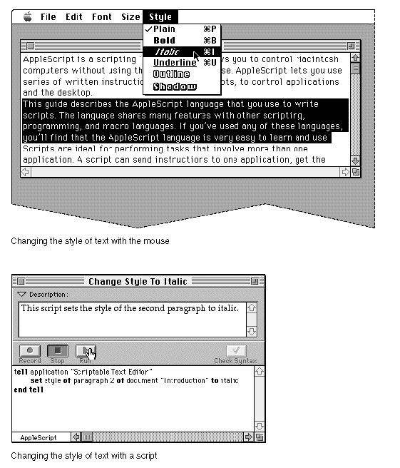

What Is AppleScript?
AppleScript is a scripting language that allows you to control Macintosh computers without using the keyboard or mouse. AppleScript lets you use series of written instructions, known as scripts, to control applications and the desktop. Figure 1-1 shows the difference between changing the text style of a paragraph with the mouse and performing the same task with a script.Figure 1-1 Changing text style with the mouse and with a script

The script shown at the bottom of Figure 1-1 is written in AppleScript English, which is a dialect of the AppleScript scripting language that resembles English. This guide describes AppleScript English and how you can use it to write scripts. Other dialects, such as AppleScript Japanese and AppleScript French, are designed to resemble other human languages. Still others, such as the Programmer's Dialect, resemble other programming languages. For information about dialects other than AppleScript English, see the guide for the dialect you want to use. For information about installing dialects, see Getting Started With AppleScript.
All AppleScript dialects share many features with other scripting, programming, and macro languages. If you've used any of these languages, you'll find AppleScript dialects very easy to learn and use.
AppleScript comes with an application called Script Editor that you can use to create and modify scripts. You can also use Script Editor to translate scripts from one AppleScript dialect to another.